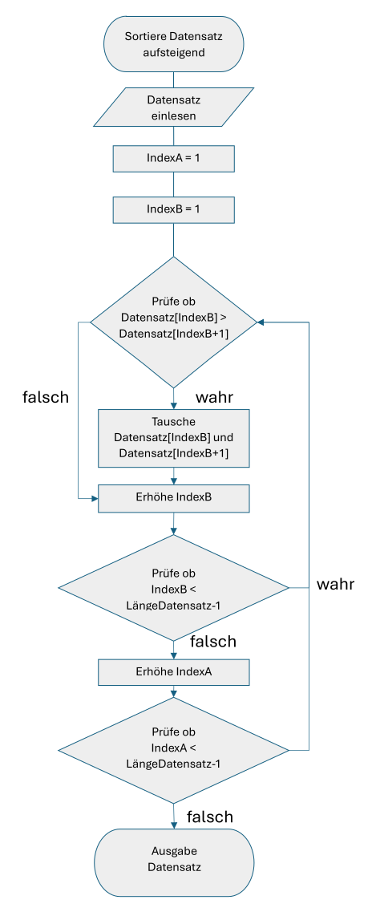
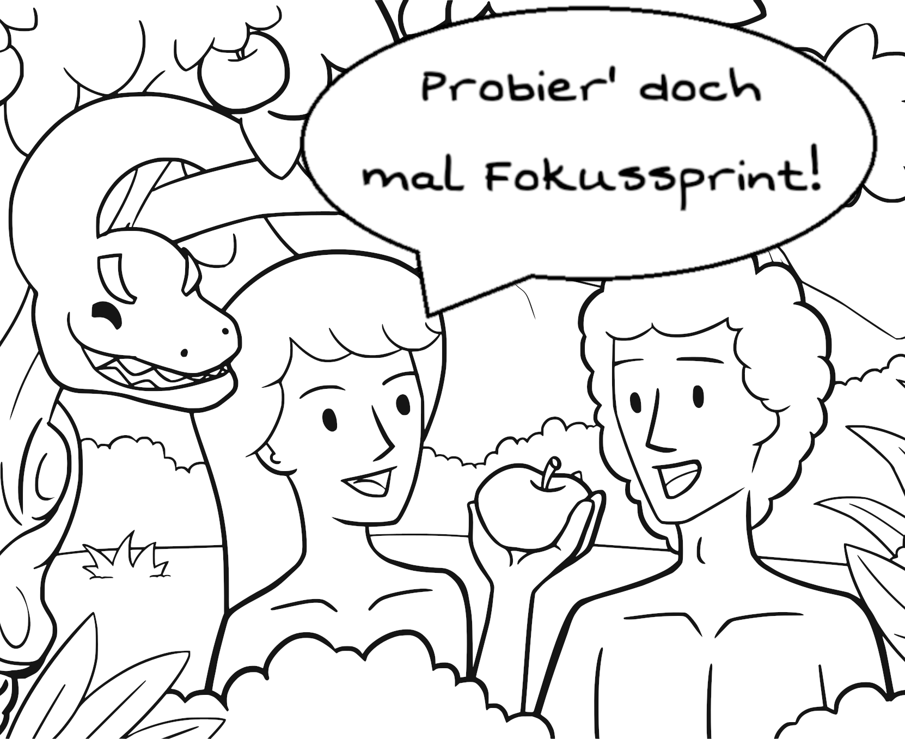
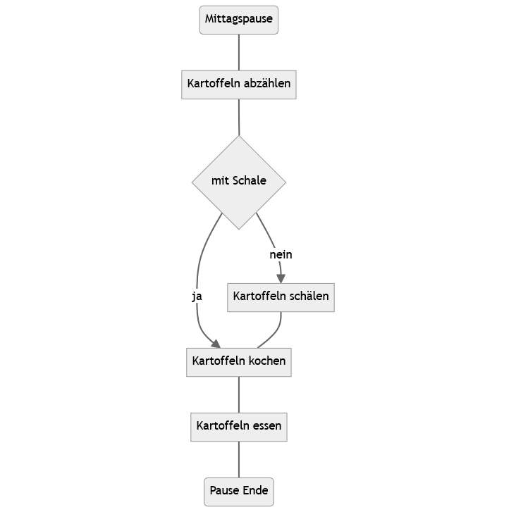
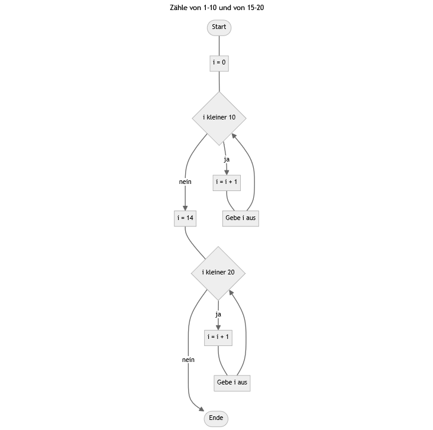

# Flowchart with Schemdraw and Graphviz in Python
## Schemdraw
import subprocess
subprocess.call(['pip', 'install', 'schemdraw'])
import schemdraw
from schemdraw.flow import *
with schemdraw.Drawing() as drawing:
# continuous process in correct order from start to end
drawing += Start().label("Lunch Break")
drawing += Line().down()
drawing += Box().label("Count potatoes")
drawing += Line().down()
drawing += (with_peel := Decision(S="Yes", E="No").label("With peel?"))
drawing += Arrow().at(with_peel.S)
drawing += (cook := Box().label("Cook potatoes"))
drawing += Line().down()
drawing += Box().label("Eat potatoes")
drawing += Line().down()
drawing += Start().label("Break End")
# alternative branch of the decision
drawing += Arrow().right().at(with_peel.E)
drawing += (peel := Box().label("Peel potatoes"))
drawing += Wire("|-", arrow="->").at(peel.S).to(cook.E) # .S + .E (or other directions) must be set; |- first defines a vertical, right-angled edge
drawing.draw()
# drawing.save("Potatoes.svg")
## Graphviz
## requires a local installation of Graphviz https://graphviz.org/download/
import subprocess
subprocess.call(['pip', 'install', 'graphviz']) # installs the graphviz module
import graphviz
dot = graphviz.Digraph(name="Potatoes")
### Start / End
dot.node(name="Lunch Break", shape="Mrecord")
dot.node(name="Break End", shape="Mrecord")
### Instructions
dot.node(name="Count potatoes", shape="box")
dot.node(name="Peel potatoes", shape="box")
dot.node(name="Cook potatoes", shape="box")
dot.node(name="Eat potatoes", shape="box")
### Decision
dot.node(name="with peel", shape="diamond")
### Edges
dot.edge("Lunch Break", "Count potatoes", arrowhead="none")
dot.edge("Count potatoes", "with peel", arrowhead="none")
dot.edge("with peel", "Cook potatoes", label="Yes")
dot.edge("with peel", "Peel potatoes", label="No")
dot.edge("Peel potatoes", "Cook potatoes", arrowhead="none")
dot.edge("Cook potatoes", "Eat potatoes", arrowhead="none")
dot.edge("Eat potatoes", "Break End", arrowhead="none")
dot.render("Potatoes.gv", cleanup=True, view=True)Werkzeugbaustein Pseudocode

Bausteine Computergestützter Datenanalyse von Lukas Arnold, Simone Arnold, Florian Bagemihl, Matthias Baitsch, Marc Fehr, Franca Hollmann, Maik Poetzsch und Sebastian Seipel. Werkzeugbaustein Pseudocode von Maik Poetzsch ist lizensiert unter CC BY 4.0. Das Werk ist abrufbar auf GitHub. Ausgenommen von der Lizenz sind alle Logos und anders gekennzeichneten Inhalte. 2025
Zitiervorschlag
Arnold, Lukas, Simone Arnold, Florian Bagemihl, Matthias Baitsch, Marc Fehr, Franca Hollmann, Maik Poetzsch, und Sebastian Seipel. 2025. „Bausteine Computergestützter Datenanalyse. Werkzeugbaustein Pseudocode“. https://github.com/bausteine-der-datenanalyse/w-pseudocode.
BibTeX-Vorlage
@misc{BCD-pseudocode-2025,
title={Bausteine Computergestützter Datenanalyse. Werkzeugbaustein Pseudocode},
author={Arnold, Lukas and Arnold, Simone and Bagemihl, Florian and Baitsch, Matthias and Fehr, Marc and Hollmann, Franca and Poetzsch, Maik and Seipel, Sebastian},
year={2025},
url={https://github.com/bausteine-der-datenanalyse/w-pseudocode}} 1 Prerequisites
There are no prerequisites for working on this module. Depending on the scope of the exercises you choose to complete, the estimated working time is approximately 120 to 300 minutes.
During the work on this module, flowcharts can be created using Python or R, among other tools. For this purpose, the following libraries are required:
Python: Schemdraw and/or graphviz. To run Graphviz, a local installation of the program Graphviz is also required.
R: DiagrammeR
At the end of the module, there is the option to develop a program to evaluate a stock market trading strategy. For illustration purposes, an excerpt from the file ie_data.xls created by Robert Shiller, containing historical stock market data for the S&P 500, is used. The file can be obtained from https://shillerdata.com/.
2 Learning Objectives
In this module, you will learn how to use pseudocode to structure (complex) problem statements and to develop a program for computer-based data analysis step by step. In addition, you will learn how to visualize the program flow in the form of a flowchart, both for your own understanding and for communication with others.
After completing this module, you will be able to …
use the development of pseudocode as a creativity technique,
describe a program using pseudocode,
break a program down into clearly defined intermediate steps and arrange them in a purposeful sequence,
describe the dependencies between the intermediate steps,
identify the prerequisites for executing each intermediate step as well as the entire program, and
visualize the program flow as a flowchart.
Keywords: developing ideas, program description, pseudocode, flowchart, DIN 66001
3 Pseudocode
3.1 What Is Pseudocode?
Toast Dining Eating by OpenClipart-Vectors is licensed under the Pixabay Content License. The work is available on Pixabay. 2013
Think of preparing a festive meal. You have found a recipe online, bought all the ingredients from the ingredient list, and start cooking according to the preparation time stated so that everything is ready before your guests arrive. Sounds good, right? Well, this approach often results in hungry guests, because recipes are rarely complete step-by-step instructions but instead require some preparatory work:
Sometimes ingredients are missing from the ingredient list; sometimes an ingredient that needs to be purchased is not mentioned in the recipe steps and is left unused at the end. In step four, the dough has already been resting in the refrigerator for two hours and the oven has already been preheated to 250 degrees. A complete task description requires preparation: only those who know all dependencies will finish on time.
In the kitchen, a specialized technical language is used: Do you know what blanching means, why even clean vegetables should be trimmed, when pasta is al dente, or whether the sauce should already be flaming before it is deglazed? If not, some translation work into a language you understand is required first.
If you do not have a knife, you cannot cut bread: ingredients are not everything; the right tools are also required for a successful dish. Do you have everything in your kitchen that you need for preparation?
In short: you need your own plan—not only when cooking, but also when performing computer-based data analysis. Data analysis is rarely linear. Instead, steps for organizing, visualizing, analyzing, and further processing data alternate. A wide variety of programs with their own syntax are available for this purpose. Or is a self-written function better suited? Data are often available in different formats and must be transformed for use with specialized programs.
These are typical challenges of data analysis that can be addressed through good planning. Pseudocode helps you with this planning.
Pseudocode describes a program and computer science concepts in an easily understandable, everyday language. Developing pseudocode can be used both as a creativity technique and as a template for the structured solution of tasks. Pseudocode allows you to initially focus on the conceptual solution of a task and the planning of the program structure. This can be useful for simplifying development by dividing the program into intermediate steps, identifying required programs, packages, and methods, or estimating the workload.
Pseudocode is also a tool for communicating about a program with others, for example when discussing a problem in code. Because pseudocode does not require knowledge of a specific programming language, it is intuitively understandable. To support the communicative function of pseudocode, it can, for example, be visualized as a flowchart.
Definition 1: Pseudocode
Pseudocode describes a solution approach for computational tasks using a formalized everyday language instead of the expressions and syntax of a programming language. The prefix pseudo comes from Greek and means false or only appearing to be something. Pseudocode is “false” program code that is formed using natural language. (AAU 2019)
Pseudocode is also a means of communication for discussing computational problems and their solutions with others (e.g., fellow students, supervisors).
3.2 Pseudocode From Simple to Detailed
The form and level of detail with which you formulate pseudocode depend on your level of knowledge and your goal: for structuring your program into sequential intermediate steps and identifying dependencies, a simple list of work steps is sufficient. For developing an algorithm and identifying required methods (e.g., loops) and tools (e.g., specialized packages), it will be necessary to describe program instructions in more detail. A detailed representation helps you, for example, to identify recurring work steps that can be outsourced into a function. For presenting your program at a scientific conference or documenting it in a user manual, a flowchart may be appropriate.
Program instruction with a descriptive name
SortAscending
Instruction block in everyday language
SortAscending
IterateDataset (DatasetLength - 1) times # Number of repetitions
From beginning to (DatasetLength - 1) # Pairwise comparisons
Compare value and successor
IF value greater than successor THEN
Swap value and successor
OutputDatasetBlock of instructions in the style and using the terminology of programming
SortAscending
IF DatasetLength > 1 THEN
FROM Dataset[IndexA = 1] TO Dataset[IndexA = DatasetLength - 1] DO # Number of loop iterations
FROM Dataset[IndexB = 1] TO Dataset[IndexB = DatasetLength - 1] DO # Pairwise comparisons
IF Dataset[IndexB] > Dataset[IndexB + 1] THEN
Swap(Dataset[IndexB], Dataset[IndexB + 1])
Write(Dataset[IndexB], to = TempStorage)
Write(Dataset[IndexB + 1], to = Dataset[IndexB])
Write(TempStorage, to = Dataset[IndexB + 1])
IF IndexB < DatasetLength - 1 THEN
Increment IndexB
IF IndexA < DatasetLength - 1 THEN
Increment IndexA
OutputDataset
Flowchart by Marc Sönnecken and Maik Poetzsch
4 Writing Pseudocode
The following schema helps you develop ideas, describe a program, and visualize the program flow. Pseudocode allows you to describe your program as well as the required tools and methods in a way that is understandable to yourself and others. How you write pseudocode is an individual matter, as there are only a few rules. Pseudocode primarily helps you develop a solution approach for a given task. Pseudocode is considered ‘correctly’ written if it helps you:
focus your thoughts,
describe a task in a way that is understandable to you,
break the task into clearly defined sub-tasks,
develop a solution procedure (algorithm) for the sub-tasks,
identify required methods and tools,
describe your solution procedures as a program of consecutive steps,
estimate the time required for implementation, and
communicate your program to others.
4.1 Exercises
For this module, two exercises are available. They are designed to be approachable for students without prior knowledge in data analysis and illustrate aspects of program development. However, it is often best to work on your own project. In the “Own Project” tab, you can formulate your own task.
No prior data analysis knowledge: Baking a Sweet Braid
Learning goals: Break a task into consecutive steps, fully describe each step, identify dependencies and prerequisites (required tools, estimate time).With prior data analysis knowledge: Vitamin C in Guinea Pigs
Learning goals: Describe data analysis using pseudocode.
Here you can note down your task or project goal. Please note that your text will not be saved.
Your friend Lisa sends you a recipe she found online. She writes that she can arrive an hour earlier than planned tomorrow to bake together with you – working together will be faster than the 65 minutes stated in the recipe. Lisa also asks if she should bring any ingredients.
How would you respond to Lisa? Model the baking process.
The following recipe was created by Anna-Lena and is available at https://www.einfachbacken.de/rezepte/hefezopf.
Tender Sweet Braid
Preparation time: 40 min
Baking time: 25 min
| Ingredients | |
|---|---|
| 250 ml | milk |
| 475 g | wheat flour (Type 405) |
| 60 g | sugar |
| ½ cube | fresh yeast (approx. 21 g) |
| 50 g | soft butter (room temperature) |
| 1 pinch | salt |
| 1 | egg (size M) |
| some milk for brushing | |
| some pearl sugar for sprinkling | |
| some flour for dough handling |
Step 1
250 ml milk, 475 g wheat flour (Type 405), 1 pinch sugar, ½ cube fresh yeast (approx. 21 g)
Warm the milk until lukewarm. Sift the flour into a bowl. Make a well in the flour and crumble the yeast into the well. Mix 3 tbsp of the lukewarm milk with 1 pinch of sugar and pour over the yeast in the well. Stir the yeast-milk mixture lightly with a spoon (do not knead the flour yet). Cover the bowl with a kitchen towel and let it rest in a warm place for about 15 minutes.
Step 2
1 egg (size M), 60 g sugar, 1 pinch salt, 50 g soft butter (room temperature)
Add the egg, remaining milk, remaining sugar, and salt to the bowl and knead together with the yeast mixture and flour for 3 min on low speed, then approx. 5 min on high speed using the mixer hooks. Gradually knead in the butter in pieces. To ensure the dough rises well, knead it vigorously for at least 5 min. Otherwise, the dough may collapse later or be sticky!
Step 3
some flour for dough handling
Cover the bowl with the dough again with a kitchen towel and let it rest in a warm place for another 60 min. Then place the dough on a floured surface and divide it into three parts. Roll each dough piece into a long sausage, about 40 cm long. Braid the dough strands. Twist the ends together and tuck them under the braid to create a neat finish. Place the braid on a baking sheet lined with parchment paper and cover with a kitchen towel. Let it rest for another 45 min.
Step 4
some milk for brushing, some pearl sugar for sprinkling
Meanwhile, preheat the oven to 200°C top/bottom heat (180°C fan). Brush the braid with some milk and sprinkle with pearl sugar. Bake the braid in the preheated oven for about 15-20 minutes until lightly browned. Let it cool completely. The braid can also be frozen.
In a group of 60 guinea pigs, the length of odontoblasts (tooth-forming cells) was measured in microns (len). The animals had previously been given Vitamin C as ascorbic acid (VC) or orange juice (VC) (supp). The guinea pigs received doses of 0.5, 1, or 2 milligrams of Vitamin C per day (dose). (Crampton 1947)
What effect does Vitamin C have on tooth growth in guinea pigs? Describe your approach using pseudocode or a flowchart to determine the effect of supplement type and dose.
| # | len | supp | dose |
|---|---|---|---|
| 1 | 4.2 | VC | 0.5 |
| 11 | 16.5 | VC | 1 |
| 21 | 23.6 | VC | 2 |
| 31 | 15.2 | OJ | 0.5 |
| 41 | 19.7 | OJ | 1 |
| 51 | 25.5 | OJ | 2 |
If you want to view the complete dataset, you can access it in R with ToothGrowth or download the dataset here: ToothGrowth.csv
4.2 Using EVA for a Focus Sprint

Adam Bible Nature by CCXpistiavos is licensed under the Pixabay Content License. Available on Pixabay. The speech bubble has been added.
Sometimes getting started is the hardest part. The first step in program development is idea collection: What exactly should be done, which steps are required, what can already be done, and what still needs preparation or research? If you already have a clear idea of the solution, you can skip this step.
The Focus Sprint (Scheuermann 2016) is a fast writing exercise to get started on writing about a specific topic. The exercise can be used as a creativity technique for starting a topic or as a thinking aid during work. The goal is to write quickly, which allows you to get close to your inner voice and let creativity flow. (Scheuermann 2016, 74, 78)
The Focus Sprint is conducted in two steps: The first step is a five-minute writing phase. Write the task or problem you want to explore on paper or a computer. You can use a keyword or formulate a specific question. Set a timer for 5 minutes and start writing quickly on your prepared sheet. There is only one rule: If you notice your thoughts drifting off-topic, return to the topic, for example, by rewriting the task where you are currently writing. (Scheuermann 2016, 78)
Focus Sprint
You can perform your Focus Sprint in this text field. Please note that your text will not be saved. So: 3, 2, 1 – start writing in your own words!
The second step is evaluation. Read through your Focus Sprint and highlight what seems important. Can you identify intermediate steps? If so, highlight them and add notes, comments, or questions. (cf. Scheuermann 2016, 78)
Tipp 2: Identifying Intermediate Steps
Intermediate steps break a complex task into manageable work packages that each perform a specific function in the program flow (e.g., sorting data) or produce a specific output (e.g., a chart). An intermediate step is a subroutine, and creating intermediate steps helps break a task into subtasks and understand which steps must be executed in a subroutine to solve the subtask.
The main purpose of creating intermediate steps is to reduce complexity. A subroutine developed for a defined subtask can be easily tested to identify and fix errors. Subroutines can also be reused in the program flow, e.g., to simplify the solution of another, more complex subtask.
When defining intermediate steps, other criteria can also be useful, such as the location of data processing (e.g., at the measuring site, on a workstation, in a data center) or the tools used (e.g., microcontroller, Python, C++, manual data processing).
Tipp 1: Possible Intermediate Steps for Exercises
Baking a braided yeast bread
By function: Prepare ingredients, process ingredients, bake
By output: Prepare milk mixture, prepare yeast mixture, prepare raw dough, shape dough braid, bake braid
Vitamin C for guinea pigs
By function: Create subsets, analyze dataset, visualize dataset, create flowchart
By output: Tabulated mean comparison, boxplot for all subgroups, Mermaid flowchart
The EVA principle helps you fully describe intermediate steps. EVA is a basic pattern in computer-based data processing: Entry, Processing, Output. These steps follow in order: first data is collected, then processed, and finally results are output.
Entry: What data is provided as input? What format is it in?
Processing: What steps must be performed to achieve the described output?
Output: What result should the data processing produce? What format should the output be in?
To conclude, summarize your focus sprint in one core sentence that highlights what is most important to you. This can be a statement, but also an open question that you would like to pursue further. Mark this core sentence additionally. (Scheuermann 2016, 79)
With this, you have completed the first step toward formulating a complete program description! If you wish, you can deepen your thoughts on an open question or an intermediate step with another focus sprint. Otherwise, the next step follows now.
4.3 Program Description in Pseudocode
You now have an idea of your solution path, its intermediate steps, and their sequence. The next step is formalizing your program using pseudocode. Program instructions are described in everyday language but with programming style and terminology. This means:
Assign meaningful names to instructions. In data analysis, common instructions are:
Import data (
import), e.g., FetchDataFromLocationOrganize data (
tidy), e.g., SortAscendingTransform data (
transform), e.g., ComputeAverageVisualize data (
visualise), e.g., GenerateHistogramModel data (
model), e.g., CreateLinearModelExport data (
export), e.g., SavePlot
(cf. Wickham, Çetinkaya-Rundel, und Grolemund 2023, Chapter Whole Game)
to document the program flow by
writing consecutive program statements one below the other,
making blocks of program statements recognizable through indentation and/or bracketing, and
grouping related program statements into clearly separated intermediate steps.
to separate program statements from explanatory parts by using comments, by
marking comments with special symbols, for example
// comment,# comment,%% comment, or/* comment */, andplacing them in front of individual work steps (e.g., short descriptions of intermediate steps according to the EVA model) and/or using them within a line.
Expressing complex program instructions using computer science terminology, where appropriate in accordance with the concepts and syntax of the programming language you have chosen. This includes:
Conditional statements: Conditional statements make the execution of program instructions dependent on one or more conditions.
IF A (less than, less than or equal to, exactly equal to, greater than, greater than or equal to, not equal to) B, THEN C, ELSE D
IF A B1 AND B2, THEN C
IF A B1 OR B2, THEN C
Loops: Loops repeat program instructions as long as the entry condition holds or until the termination condition is met.
WHILE A, DO C
FROM A TO B, DO C
Functions: Functions bundle program instructions so that parts of a program can be reused multiple times. Functions are a form of subprograms.
- FunctionDoXY(Argument 1, Argument 2, …)
Instruction1
Instruction2
…
Beispiel 1: Program Description in Pseudocode
# Input: one-dimensional, ordinal dataset
# Processing: check if dataset contains at least two values
## if not: error message
## if yes: ascending sort using bubble sort with control structure for the outer loop
# Output: ascending sorted dataset
SortAscending(Dataset)
IF DatasetLength > 1 THEN
# outer loop
do_work = TRUE # control structure for the outer loop
IF do_work == TRUE THEN
FROM Dataset[IndexA = 1] TO Dataset[DatasetLength - 1] DO
do_work = FALSE
# inner loop for pairwise comparisons
FROM Dataset[IndexB = 1] TO Dataset[DatasetLength - 1] DO
IF Dataset[IndexB] > Dataset[IndexB + 1] THEN
Swap(Dataset[IndexB], Dataset[IndexB + 1])
Write(Dataset[IndexB], to = TempStorage)
Write(Dataset[IndexB + 1], to = Dataset[IndexB])
Write(TempStorage, to = Dataset[IndexB + 1])
do_work = TRUE # mark if a swap occurred
IF IndexB < DatasetLength - 1 THEN
Increment IndexB
IF IndexA < DatasetLength - 1 THEN
Increment IndexA
OutputDataset
ELSE
Report("The dataset must contain at least two elements!")
Note: Manually incrementing the counter is usually not required in programming languages and is used here only for better clarity.
By formalizing your program in pseudocode, you have developed an intuitively understandable, complete program description. The next step is to visualize your program graphically.
Describe a program in pseudocode that counts from 1 to 10 and from 15 to 20.
You can write your pseudocode in this text field. Please note that your text will not be saved.
i = 0
WHILE i is smaller then 10 DO
increase i by 1
output i
i = 14
WHILE i is smaller then 20 DO
increase i by 1
output iKarel The Robot
If you want to practice the application of computer science concepts such as conditionals or loops, Karel The Robot is well worth a look. The program introduces the application of computer science control structures using its own pseudocode language.
An introduction to the program, along with instructions for installation and usage, can be found on the GitHub page linked in the previous paragraph or on the YouTube channel of Medienberatung Niedersachsen:
4.4 Visualizing Program Flow
Lead 1 by CocoMaterial is licensed under CC0 1.0. The work is available on CocoMaterial.
A clear graphical representation gives pseudocode even more clarity and thus particularly supports communication with others. The graphical representation of a program is called a flowchart. The symbols used for a flowchart are standardized in (DIN 1983). The shapes are also referred to as nodes, and the connections as edges.
- Rounded rectangle (Number 6.4.1)
- Interface to the environment that indicates the beginning and end of a sequence and, for example, signals the origin or destination of data.
- Rectangle (Number 6.1.1)
- Processing including input/output

- Diamond (Number 6.1.2)
- Branching / decision

- Rectangle with double vertical lines (Number 7.2.4)
- Reference to a program documented elsewhere

- Connection (Number 6.3.1)
- Process chains are connected with lines or arrows. Connections are oriented from left to right or from top to bottom; deviations must be indicated with arrowheads.
- If multiple outputs are associated with conditions, these must be identified by labels on the connecting lines.
- Multiple connections to a symbol can be merged into one connection. However, crossing connection lines should be avoided. These do not represent a merge. (Note: Schemdraw is recommended for displaying merged connections.)
(DIN 1983)
Hinweis 1: Representation of Data According to DIN 66001
DIN 66001 also defines symbols for representing data. However, the standard specifies for flowcharts: “Data are not represented. See example in section A.2.” (DIN 1983, p. 2). Nevertheless, specific types of data are shown in example A.2, such as manually or machine-processed data (DIN 1983, pp. 13–14).
However, the symbols for specific data types defined in numbers 6.2.2 to 6.2.10 are not fully available in all diagram tools. This affects:
Graphviz (e.g., machine-processed data according to number 6.2.2)
Mermaid (e.g., machine-processed data according to number 6.2.2)
Office software suite LibreOffice (e.g., manually processed data according to number 6.2.3)
In the representation of flowcharts, the use of symbol No. 6.2.1 (general data) is common practice.
- Data (Number 6.2.1)
- Representation for data or data carriers in general
Tools for Creating Flowcharts
Flowcharts can be created in various ways:
with pen and paper,
with office software suites such as LibreOffice,
with specialized packages such as DiagrammeR or Schemdraw.
The range of functions and syntax differ, and each tool has its own strengths. Mermaid, Graphviz, and Schemdraw are declarative drawing tools with which flowcharts (and other graphics) can be written and rendered visually. Mermaid has a simple, intuitive syntax. Graphviz allows more design options (but requires a local system installation when used with Python). The Python module Schemdraw supports a syntax similar to Python code and provides easy access to DIN-compliant nodes and edges.
Beispiel 2: Creating Flowcharts in Python and R
Note: For technical reasons, the graphic was included as an image.
# Flowchart with DiagrammeR in R
install.packages("DiagrammeR")
library("DiagrammeR")
## Mermaid
DiagrammeR::mermaid("
graph TD
0(Lunch break)
A[Count potatoes]
B{with skin}
D[Cook potatoes]
E[Eat potatoes]
S[Peel potatoes]
Z(Break ends)
0---A
A---B
B-->|yes|D
B-->|no|S
S---D
D---E
E---Z
")
## Graphviz
DiagrammeR::grViz("
graph Potatoes {
# defining nodes
node [shape = Mrecord]
Lunch_break; Break_ends
node [shape = box]
Count_potatoes
Peel_potatoes
Cook_potatoes
Eat_potatoes
node[shape = diamond]
with_skin
# defining edges
Lunch_break -- Count_potatoes
Count_potatoes -- with_skin
with_skin -- Cook_potatoes[dir = forward label=yes]
with_skin -- Peel_potatoes[dir = forward label=no]
Peel_potatoes -- Cook_potatoes
Cook_potatoes -- Eat_potatoes
Eat_potatoes -- Break_ends
}
")
Create a flowchart for a program that counts from 1 to 10 and from 15 to 20.
i = 0
WHILE i is smaller then 10 DO
increase i by 1
output i
i = 14
WHILE i is smaller then 20 DO
increase i by 1
output i---
title: Count from 1-10 and from 15-20
---
flowchart TD
Start([Start])
initialize1[i = 0]
initialize2[i = 14]
Loop1{i less than 10}
Loop2{i less than 20}
Increment1[i = i + 1]
Increment2[i = i + 1]
Output1[Print i]
Output2[Print i]
End([End])
Start --- initialize1
initialize1 --- Loop1
Loop1 -->|no| initialize2 --- Loop2
Loop2 -->|yes| Increment2 --- Output2 --> Loop2
Loop2 -->|no| End
Loop1 -->|yes| Increment1 --- Output1 --> Loop1
%% invisible connections for positioning
Output1 ~~~ Loop2
Output2 ~~~ End
5 Sample Solutions
Tipp 3: Baking Braided Bread
Preparing the braided bread takes at least three hours. The dough (or yeast mixture) needs to rise over several steps for a total of 120 minutes and then cool after baking. Due to the long waiting times, one person can complete all steps, and having a second person work in parallel saves very little time. Lisa may, of course, come an hour earlier, but then the dough is either resting for the final time, baking in the oven, or cooling. She does not need to bring ingredients, as the ingredient list is complete.
# Step 1 - approx. 25 minutes
## Input: 250 ml milk, 475 g wheat flour, 1 pinch of sugar, ½ cube of yeast
## Tools: bowl, sieve, pot, spoon, kitchen towel
## Process: Dissolve yeast in sweetened milk
## Output: Yeast mixture, flour
PrepareYeastMixture
SiftFlour # use sieve
AddFlour
MakeWell # create a well in the flour
CrumbleYeast
AddYeast
PrepareMilk # use pot
**WHILE** Milk < lukewarm **DO**
HeatMilk
AddSugar
Stir # mix milk and sugar with spoon
AddMilk
Stir # mix yeast and milk mixture with spoon
DoughRises(Time = 15 minutes)
CoverBowl # use kitchen towel
KeepWarm
# Step 2 - approx. 75 minutes
## Input: yeast mixture, flour, 1 egg, 60 g sugar, 1 pinch salt, 50 g butter
## Tools: bowl, mixer, knife, kitchen towel
## Process: Add egg, milk, salt, butter and knead
## Output: raw dough
PrepareDough
DiceButter # use knife
# Output: n butter cubes
**WHILE** DoughRises **DO**
Wait
AddEgg
AddMilk
AddSugar
AddSalt
Knead(Time = 3 min, Speed = low) # use mixer hook
Knead(Time = 5 min, Speed = high) # use mixer hook
AddButter
**WHILE** n > 0 **DO**
Knead(Speed = high)
AddButterCube
n = n - 1
Knead(Time = 5 min, Speed = high) # use mixer hook
DoughRises(Time = 60 minutes)
CoverBowl # use kitchen towel
KeepWarm
# Step 3 - approx. 55 minutes
## Input: raw dough, some flour
## Process: Shape raw dough into braided loaf
## Tools: baking tray, parchment paper, kitchen towel
## Output: braided loaf
ShapeBraid
PlaceParchmentOnTray
FlourWorkSurface
PlaceDoughOnSurface
DivideDough(Pieces = 3)
# Output = n dough pieces
RollDough
**WHILE** n > 0 **DO**
RollPiece(Length = 40 cm)
n = n - 1
CreateBraid
BraidRolls
TwistEnds
PlaceBraidOnParchment
DoughRises(Time = 45 minutes)
CoverBraid # use kitchen towel
KeepWarm
# Step 4 - approx. 40 minutes
## Input: braided loaf, some milk, some pearl sugar
## Tools: brush, oven
## Process: Brush loaf, sprinkle, and bake
## Output: baked yeast braid
BakeBraid
PreheatOven
**IF** ConvectionAvailable **THEN**
Mode = Convection
Temperature = 180 C
**ELSE**
Mode = TopBottomHeat
Temperature = 200 C
BrushBraidWithMilk # use brush
SprinkleBraidWithPearlSugar
BakeBraid
PlaceTrayInOven
**WHILE** Braid < lightly brown **DO**
KeepTrayInOven
RemoveTray
CoolBraid
**WHILE** Braid > room temperature **DO**
Wait
Tipp 4: Vitamin C in Guinea Pigs
# Step 1 – Load Dataset
## Input: URL
## Tool: Browser
## Processing: Save raw data
## Output: comma-separated file ToothGrowth.csv
FetchDatasetFromURL
SaveDataset
# Step 2 – Compare Means
## Input: ToothGrowth.csv
## Tool: IDE
## Processing: Compute means for subsets
## Output: Table of means by dose and administration method
DetermineRowNumbers
RowNumbers(supp = OJ)
RowNumbers(supp = VC)
RowNumbers(dose = 0.5)
RowNumbers(dose = 1)
RowNumbers(dose = 2)
CreateSubsets # by criterion or by row numbers
SubsetSupp = OJ
SubsetDose = 0.5
SubsetDose = 1
SubsetDose = 2
SubsetSupp = VC
SubsetDose = 0.5
SubsetDose = 1
SubsetDose = 2
ComputeMeans
MeanLen(Dataset)
MeansSubsets
MeanLen(SubsetSupp = OJ & Dose = 0.5)
MeanLen(SubsetSupp = OJ & Dose = 1)
MeanLen(SubsetSupp = OJ & Dose = 2)
MeanLen(SubsetSupp = VC & Dose = 0.5)
MeanLen(SubsetSupp = VC & Dose = 1)
MeanLen(SubsetSupp = VC & Dose = 2)
CreateTable
Columns = OJ, VC
Rows = Dose
Cells = MeanLen
OutputTable
# Step 3 – Graphical Representation
## Input: ToothGrowth.csv
## Tool: Boxplot function
## Processing: Generate boxplot by dose and method
## Output: Boxplots by dose and administration method
Boxplot(Len by Dose & Method)
CreateBoxplot
DistinguishMethodByColor
AddLegend
SaveBoxplot
6 Key Points
The form and level of detail in which you write pseudocode depends on your knowledge and your goal. Pseudocode can be used as a creativity technique without formal rules, help in a detailed form when developing an algorithmic solution, or support your communication with others visually in the form of a flowchart.
7 Learning Assessment
7.1 Skills Quiz
- Write a program in pseudocode that outputs all even numbers up to 10.
- Find the error in the pseudocode.
A friend shows you the pseudocode of a program that is supposed to check whether letters are uppercase or lowercase. However, the output only works for lowercase letters. Can you find the mistake?
text = input("Please enter your text: ")
char_list = DivideCharactersIntoList(text)
FOR EACH element IN char_list DO
if decimal_value(element) >= 97 AND decimal_value(element) <= 122 DO
print("The character", element, "is lowercase.")
if decimal_value(element) >= 65 AND decimal_value(element) <= 90 DO
print("The character", element, "is uppercase.")
- Draw a flowchart of the correct program.
Tipp 6: Solutions
Solution 1:
i = 1
WHILE i is less than or equal to 10
IF i modulo 2 is equal to 0 THEN
Print i
Increment i by 1Solution 2: The check for uppercase letters (decimal_value(element) >= 65 AND decimal_value(element) <= 90) takes place within the statement block that is executed when a letter is lowercase (decimal_value(element) >= 97 AND decimal_value(element) <= 122). The truth value of this condition is false if the letter is uppercase. Therefore, the following statements are not executed when element contains an uppercase letter. Proper indentation can resolve this issue.
text = Input("Please enter your text.")
char_list = SplitIntoCharList(text)
FOR EACH element IN char_list DO
If DecimalValue(element) >= 97 AND DecimalValue(element) <= 122 DO
Print("The character ", element, " is lowercase.")
# corrected indentation
If DecimalValue(element) >= 65 AND DecimalValue(element) <= 90 DO
Print("The character ", element, " is uppercase.")Solution 3:
Tipp 5: Mermaid Diagram

7.2 Exercises
Develop a Stock Market Strategy
You want to evaluate the potential return of a turnaround strategy in the stock market. Your idea is to buy a stock index when it has fallen at least 30 percent from its all-time high over the past three years. With this strategy, you speculate that the index will recover and that your favorable entry point will yield a better return than regular, non-timed purchases. The comparison period is 30 years (you can choose the start and end dates yourself).
Test your strategy using the S&P500.
Parameters: $5,000 starting capital, an additional $500 available for investment each month over 30 years, dividends reinvested the following month or accumulated until the next price drop, strategy: Buy & Hold (no selling), price drop threshold: 30 percent from the all-time high over the past 3 years.
Optional: In how many 30-year periods would your turnaround strategy have outperformed steady accumulation?
Optional: How does the ratio change if the price drop threshold is adjusted (20 or 40 percent)?
An S&P500 dataset with monthly data from 1871 to 2024 is available on Robert Shiller’s website (direct link to the XLS file).
Hinweis 2: S&P500 Dataset Description
The dataset is provided at a monthly resolution (Date). In addition to the price (Price), distributed dividends (Dividend) are recorded.
Note: The dataset is provided as an Excel file and has been slightly modified for clarity (column name adjustments, Date column formatting, rounding of Price and Dividend columns). Please note that if you download the dataset yourself, its appearance may differ.
| # | Date | Price | Dividend |
|---|---|---|---|
| 1 | 1871.01 | 4.44 | 0.26 |
| 2 | 1871.02 | 4.50 | 0.26 |
| 3 | 1871.03 | 4.61 | 0.26 |
| 4 | 1871.04 | 4.74 | 0.26 |
| 5 | 1871.05 | 4.86 | 0.26 |
| 6 | 1871.06 | 4.82 | 0.26 |
| 7 | 1871.07 | 4.73 | 0.26 |
| 8 | 1871.08 | 4.79 | 0.26 |
| 9 | 1871.09 | 4.84 | 0.26 |
| 10 | 1871.10 | 4.59 | 0.26 |
| 11 | 1871.11 | 4.64 | 0.26 |
| 12 | 1871.12 | 4.74 | 0.26 |
| 1828 | 2023.04 | 4121.47 | 68.38 |
| 1829 | 2023.05 | 4146.17 | 68.54 |
| 1830 | 2023.06 | 4345.37 | 68.71 |
| 1831 | 2023.07 | 4508.08 | 68.91 |
| 1832 | 2023.08 | 4457.36 | 69.11 |
| 1833 | 2023.09 | 4409.09 | 69.31 |
| 1834 | 2023.10 | 4269.40 | 69.64 |
| 1835 | 2023.11 | 4460.06 | 69.97 |
| 1836 | 2023.12 | 4685.05 | 70.30 |
| 1837 | 2024.01 | 4815.61 | 70.48 |
| 1838 | 2024.02 | 5011.96 | 70.65 |
| 1839 | 2024.03 | 5170.57 | 70.82 |
Literatur
AAU, Informatik-Werkstatt. 2019. „Was ist ein Pseudocode?“ 2019. https://www.rfdz-informatik.at/wp-content/uploads/2020/10/RE_I_Pseudocode.pdf.
Crampton, E. W. 1947. „THE GROWTH OF THE ODONTOBLASTS OF THE INCISOR TOOTH AS A CRITERION OF THE VITAMIN C INTAKE OF THE GUINEA PIG“. The Journal of Nutrition 33 (5): 491–504. https://doi.org/10.1093/jn/33.5.491.
DIN. 1983. „DIN 66001: Informationsverarbeitung. Sinnbilder und ihre Anwendung“. Berlin: Beuth Verlag GmbH. 1983. https://doi.org/10.31030/1300312.
Scheuermann, Ulrike. 2016. Schreibdenken: Schreiben als Denk- und Lernwerkzeug nutzen und vermitteln. 3. Aufl. utb.
Wickham, Hadley, Mine Çetinkaya-Rundel, und Garrett Grolemund. 2023. „R for data science: Import, tidy, transform, visualize, and model data“. Beijing; Boston; Farnham; Sebastopol; Tokyo: O’Reilly. 2023. https://r4ds.hadley.nz/.